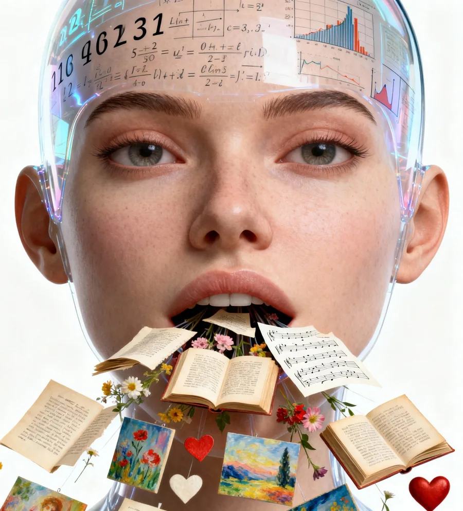

lezione-spettacolo sull'intelligenza artificiale
di Paolo Capozzo
con Antonio Colucci e Paolo Capozzo
Consulenza scientifica prof.ssa Monica Sebillo — Dip. Informatica UNISA
Resp. progetto prof. Saverio Tortoriello — Dip. Matematica UNISA
che illustra ai ragazzi (e ai loro genitori), con rigore scientifico e competenze accademiche, come funziona una IA e quali sono i processi che rendono una chatbot capace di dialogare in modo fluido e credibile. Esempi pratici e interazioni sono fatte utilizzando le piattaforme Gemini, ChatGPT, Suno, Nanobanana.
paradossale e divertente che coinvolge continuamente il pubblico, condotto con un linguaggio pop e con l'aiuto di proiezioni e giochi di ruolo. Uno show che si sviluppa attraverso continue interazioni con diverse "piattaforme intelligenti" e che cambia ad ogni replica per adeguarsi all'imprevedibilità delle loro risposte.

I ragazzi affidano all'IA pezzi della propria vita. Un recente studio di Save the Children (nov. 2025) lo dice con chiarezza:
degli adolescenti si è rivolto all'IA quando era triste, solo o ansioso.
l'ha interpellata per farsi consigliare scelte importanti da fare.
È una delle domande centrali dello spettacolo. Prima di considerare l'IA un'amica e dar credito ai suoi consigli, dovremmo sapere come ragiona.
Artificiale sarà lei nasce nell'ambito della sperimentazione del Liceo Matematico e si rivolge a tutti: studenti, insegnanti, genitori.
Artificiale sarà lei è una lezione-spettacolo adatta a tutti. Non prevede competenze specifiche da parte del pubblico. Ha una narrazione suddivisa in capitoli, che può essere calibrata, adattandola di volta in volta alle diverse "tipologie" di platea. È già stata «testata» in situazioni assai diverse per pubblici eterogenei. I risultati sono stati sempre sorprendentemente simili: partecipazione, meraviglia e divertimento.
Tutte. Indifferentemente dal tipo di scuola.
Terzo anno.
Scatti di scena per rivivere l'atmosfera, i volti e le emozioni dello spettacolo.


Questa Lezione-Spettacolo non ha una durata precisa. Varia da 70 a 90 minuti in dipendenza delle improvvisazioni che saremo costretti a fare per gestire l'imprevedibilità delle risposte delle IA e delle reazioni del pubblico alle nostre domande provocatorie.
Uno dei momenti di maggiore impatto dello spettacolo è il gioco di ruolo collettivo. L'intera platea viene suddivisa in nodi e livelli di una rete neurale umana. Senza saperlo, attraverso scambi di impulsi fisici e calcoli collaborativi, gli studenti risolveranno un cruciverba in una lingua sconosciuta.
Alcune delle musiche presenti nello spettacolo, generate con l'aiuto dell'Intelligenza Artificiale. Ascoltale e scaricale liberamente.
Teatro delle Scienze è una compagnia che accorpa in sé competenze scientifiche e teatrali.
Nasce come sperimentazione presso il Dipartimento di Matematica di UNISA all'interno del progetto Liceo Matematico e usa il teatro come strumento didattico per le discipline scientifico-tecnologiche. Ha esordito nella stagione '25-'26 con la lezione spettacolo Numero ergo sum – Breve storia dei numeri da Zero a Infinito e per la stagione '26-'27 porta nelle scuole Artificiale sarà Lei, una divertente e illuminante lezione-spettacolo sulle Intelligenze Artificiali Generative.
Il Liceo Matematico è un progetto formativo e didattico ideato e promosso dal Prof. Francesco Saverio Tortoriello, docente del Dip. di Matematica dell'Università degli Studi di Salerno. Nasce dalla collaborazione tra Scuola secondaria di secondo grado e Università e annovera tra i suoi presupposti essenziali la promozione del dialogo tra cultura scientifica e cultura umanista.
È coordinato a livello nazionale dall'Unione Matematica Italiana (UMI).
Dall'anno scolastico 2026-2027 è ufficialmente una sperimentazione nazionale quinquennale regolata dal Ministero dell'Istruzione e del Merito (MIM).
Artificiale sarà lei è uno spettacolo agile, replicabile in qualsiasi ambiente scolastico.
Scarica l'opuscolo di riepilogo e la locandina
Scopri il percorso, guarda il trailer e richiedi una data per il tuo istituto. Scrivici: fissiamo insieme la replica per le tue classi.
Prenota subito il tuo posto all'Anteprima Docenti
Prenota l'Anteprima Docenti